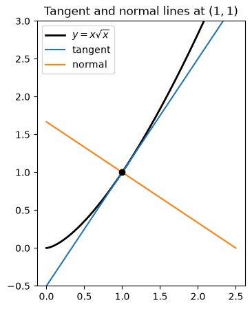
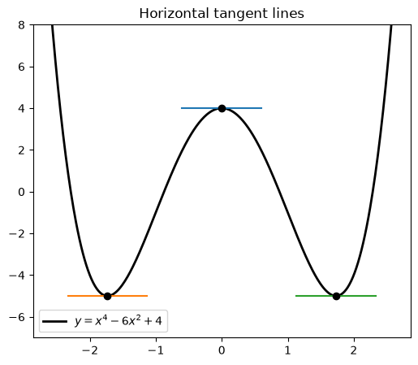
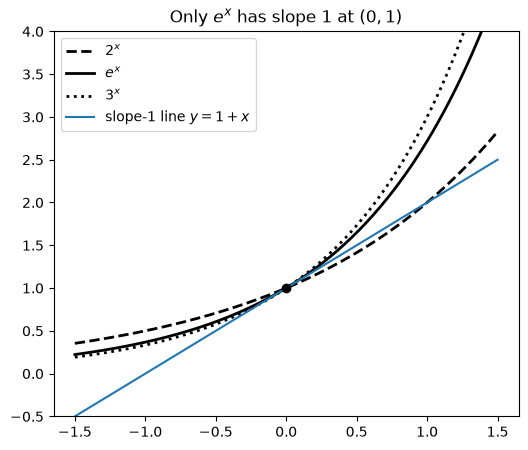

Code
import numpy as np
import sympy as sp
import matplotlib.pyplot as plt
from IPython.display import Math, display
sp.init_printing()
x, t, h, n = sp.symbols("x t h n")Miraj Samarakkody
October 18, 2026
Stewart, Calculus, 9th ed., §3.1
Learning objectives. By the end of this lecture you should be able to: 1. Differentiate constants, powers \(x^n\), and polynomials without using the limit definition. 2. Use the Constant Multiple, Sum, and Difference Rules. 3. Explain why \(\dfrac{d}{dx}(b^x) = f'(0)\,b^x\), and why the number \(e\) makes \(\dfrac{d}{dx}(e^x) = e^x\). 4. Find tangent lines, normal lines, and horizontal tangents. 5. Check every answer symbolically with SymPy and numerically with NumPy.
By definition, \[f'(x) = \lim_{h\to 0}\frac{f(x+h) - f(x)}{h}.\]
Computing this limit every time is slow. In this lecture we use the definition once for each basic type of function. The results become rules we can apply right away.
The helper below compares a derivative found by hand with SymPy’s answer and displays the result.
def check(f, by_hand, var=x):
"""Display d/dvar f = by_hand and confirm it agrees with SymPy."""
ok = sp.simplify(sp.diff(f, var) - by_hand) == 0
display(Math(rf"\frac{{d}}{{d{sp.latex(var)}}}\left({sp.latex(f)}\right) = {sp.latex(by_hand)}"))
print("Agrees with SymPy:", ok)
def diff_from_definition(f, var=x):
"""Compute f'(var) as the limit of the difference quotient."""
return sp.limit((f.subs(var, var + h) - f) / h, h, 0)The graph of \(f(x) = c\) is a horizontal line, so its slope is \(0\) everywhere: \[\boxed{\frac{d}{dx}(c) = 0}\] From the definition: \(\dfrac{c - c}{h} = 0\) for every \(h \neq 0\), so the limit is \(0\).
Look at the first few cases, using the limit definition:
| \(f(x)\) | \(x\) | \(x^2\) | \(x^3\) | \(x^4\) |
|---|---|---|---|---|
| \(f'(x)\) | \(1\) | \(2x\) | \(3x^2\) | \(4x^3\) |
The pattern is clear:
The Power Rule. If \(n\) is a positive integer, then \[\boxed{\frac{d}{dx}(x^n) = n\,x^{n-1}}\]
Proof. Use the binomial theorem to expand \((x+h)^n\): \[\frac{(x+h)^n - x^n}{h} = \frac{\left[x^n + n x^{n-1}h + \binom{n}{2}x^{n-2}h^2 + \cdots + h^n\right] - x^n}{h} = n x^{n-1} + \binom{n}{2}x^{n-2}h + \cdots + h^{n-1}.\] Every term after the first contains a factor of \(h\), so it goes to \(0\) as \(h\to 0\). That leaves \(n x^{n-1}\). \(\blacksquare\)
The table above, computed from the definition:
\(\displaystyle \frac{d}{dx}\left(x^1\right) = 1\)
\(\displaystyle \frac{d}{dx}\left(x^2\right) = 2 x\)
\(\displaystyle \frac{d}{dx}\left(x^3\right) = 3 x^{2}\)
\(\displaystyle \frac{d}{dx}\left(x^4\right) = 4 x^{3}\)
\(\displaystyle \frac{d}{dx}\left(x^5\right) = 5 x^{4}\)
The rule holds for every real number \(n\): \[\boxed{\frac{d}{dx}(x^n) = n\,x^{n-1}, \qquad n \in \mathbb{R}}\] (Stewart proves the general case later with logarithmic differentiation, in §3.6.)
Example 1. - (a) \(\dfrac{d}{dx}\left(\dfrac{1}{x^2}\right) = \dfrac{d}{dx}\left(x^{-2}\right) = -2x^{-3} = -\dfrac{2}{x^3}\) - (b) \(\dfrac{d}{dx}\left(\sqrt[3]{x^2}\right) = \dfrac{d}{dx}\left(x^{2/3}\right) = \tfrac{2}{3}x^{-1/3}\) - (c) \(\dfrac{d}{dx}\left(x^{\pi}\right) = \pi x^{\pi - 1}\)
Tip: before you differentiate, rewrite roots and reciprocals as powers.
\(\displaystyle \frac{d}{dx}\left(\frac{1}{x^{2}}\right) = - \frac{2}{x^{3}}\)
Agrees with SymPy: True\(\displaystyle \frac{d}{dx}\left(x^{\frac{2}{3}}\right) = \frac{2}{3 \sqrt[3]{x}}\)
Agrees with SymPy: True\(\displaystyle \frac{d}{dx}\left(x^{\pi}\right) = \pi x^{-1 + \pi}\)
Agrees with SymPy: TrueExample 2 (tangent and normal lines). Find the tangent line and the normal line to \(y = x\sqrt{x}\) at the point \((1, 1)\).
By hand. \(y = x^{3/2}\), so \(y' = \tfrac{3}{2}x^{1/2}\). At \(x = 1\) the slope is \(m = \tfrac32\). - Tangent: \(y - 1 = \tfrac32(x - 1)\), so \(y = \tfrac32 x - \tfrac12\). - The normal line is perpendicular to the tangent, so its slope is \(-1/m = -\tfrac23\). Normal: \(y - 1 = -\tfrac23(x-1)\), so \(y = -\tfrac23 x + \tfrac53\).
y = x * sp.sqrt(x)
m = sp.diff(y, x).subs(x, 1)
tangent = sp.expand(1 + m * (x - 1))
normal = sp.expand(1 - (x - 1) / m)
display(Math(rf"\text{{tangent: }} y = {sp.latex(tangent)}, \qquad \text{{normal: }} y = {sp.latex(normal)}"))
xs = np.linspace(0, 2.5, 300)
fig, ax = plt.subplots(figsize=(6, 5))
ax.plot(xs, xs**1.5, "k", lw=2, label=r"$y = x\sqrt{x}$")
ax.plot(xs, 1.5 * xs - 0.5, lw=1.5, label="tangent")
ax.plot(xs, -2 / 3 * xs + 5 / 3, lw=1.5, label="normal")
ax.plot(1, 1, "ko")
ax.set_aspect("equal")
ax.set_ylim(-0.5, 3)
ax.legend()
ax.set_title(r"Tangent and normal lines at $(1,1)$")
plt.show()\(\displaystyle \text{tangent: } y = \frac{3 x}{2} - \frac{1}{2}, \qquad \text{normal: } y = \frac{5}{3} - \frac{2 x}{3}\)

Suppose \(c\) is a constant and \(f\) and \(g\) are differentiable.
| Rule | Formula |
|---|---|
| Constant Multiple | \(\dfrac{d}{dx}\big[c\,f(x)\big] = c\,\dfrac{d}{dx}f(x)\) |
| Sum | \(\dfrac{d}{dx}\big[f(x) + g(x)\big] = \dfrac{d}{dx}f(x) + \dfrac{d}{dx}g(x)\) |
| Difference | \(\dfrac{d}{dx}\big[f(x) - g(x)\big] = \dfrac{d}{dx}f(x) - \dfrac{d}{dx}g(x)\) |
Proof of the Sum Rule. Let \(F = f + g\). Then \[F'(x) = \lim_{h\to0}\frac{[f(x+h)+g(x+h)] - [f(x)+g(x)]}{h} = \lim_{h\to0}\frac{f(x+h)-f(x)}{h} + \lim_{h\to0}\frac{g(x+h)-g(x)}{h} = f'(x) + g'(x).\] The limit of a sum is the sum of the limits, and both limits exist because \(f\) and \(g\) are differentiable. \(\blacksquare\)
The Sum Rule extends to any finite number of terms. Together with the Power Rule, this means we can differentiate any polynomial term by term.
Example 3. \[\frac{d}{dx}\left(x^8 + 12x^5 - 4x^4 + 10x^3 - 6x + 5\right) = 8x^7 + 60x^4 - 16x^3 + 30x^2 - 6.\]
\(\displaystyle \frac{d}{dx}\left(x^{8} + 12 x^{5} - 4 x^{4} + 10 x^{3} - 6 x + 5\right) = 8 x^{7} + 60 x^{4} - 16 x^{3} + 30 x^{2} - 6\)
Agrees with SymPy: TrueExample 4 (horizontal tangents). Find the points on \(y = x^4 - 6x^2 + 4\) where the tangent line is horizontal.
By hand. A horizontal tangent has slope \(0\): \[y' = 4x^3 - 12x = 4x(x^2 - 3) = 0 \quad\Longrightarrow\quad x = 0,\ \pm\sqrt3.\] The points are \((0, 4)\), \((\sqrt3, -5)\), and \((-\sqrt3, -5)\).
y = x**4 - 6*x**2 + 4
crit = sp.solve(sp.diff(y, x), x)
pts = [(c, y.subs(x, c)) for c in crit]
display(Math(r"\text{Horizontal tangents at } " + ", ".join(sp.latex(pt) for pt in pts)))
xs = np.linspace(-2.6, 2.6, 400)
f = sp.lambdify(x, y, "numpy")
fig, ax = plt.subplots(figsize=(6, 5))
ax.plot(xs, f(xs), "k", lw=2, label=r"$y = x^4 - 6x^2 + 4$")
for cx, cy in pts:
cx, cy = float(cx), float(cy)
ax.plot([cx - 0.6, cx + 0.6], [cy, cy], lw=1.5)
ax.plot(cx, cy, "ko")
ax.set_ylim(-7, 8)
ax.legend()
ax.set_title("Horizontal tangent lines")
plt.show()\(\displaystyle \text{Horizontal tangents at } \left( 0, \ 4\right), \left( - \sqrt{3}, \ -5\right), \left( \sqrt{3}, \ -5\right)\)

Let \(f(x) = b^x\) with \(b > 0\). The definition gives \[f'(x) = \lim_{h\to0}\frac{b^{x+h} - b^x}{h} = \lim_{h\to0}\frac{b^x\,b^h - b^x}{h} = b^x \lim_{h\to0}\frac{b^h - 1}{h}.\] The remaining limit does not depend on \(x\). It is exactly \(f'(0)\), the slope of \(y = b^x\) at \(x = 0\). So \[\boxed{\frac{d}{dx}\left(b^x\right) = f'(0)\,b^x, \qquad f'(0) = \lim_{h\to0}\frac{b^h-1}{h}}\]
An exponential function’s rate of change is proportional to the function itself. We still need the constant \(f'(0)\). Let’s estimate it numerically for \(b = 2\) and \(b = 3\):
h (2^h-1)/h (3^h-1)/h
0.1 0.717735 1.161232
0.01 0.695555 1.104669
0.001 0.693387 1.099216
0.0001 0.693171 1.098673So \(f'(0) \approx 0.69\) when \(b = 2\), and \(f'(0) \approx 1.10\) when \(b = 3\). Somewhere between \(2\) and \(3\) there is a base for which \(f'(0) = 1\) exactly.
Definition of \(e\). \(e\) is the number such that \[\boxed{\lim_{h\to0}\frac{e^h - 1}{h} = 1}\] Geometrically, \(y = e^x\) is the only exponential function whose tangent line at \((0,1)\) has slope exactly \(1\). Its value is \(e \approx 2.71828\).
Derivative of the natural exponential function. \[\boxed{\frac{d}{dx}\left(e^x\right) = e^x}\] \(e^x\) is its own derivative: at every point, the slope of the graph equals the height of the graph.
(In §3.6 we’ll see that \(f'(0) = \ln b\), so \(\dfrac{d}{dx}(b^x) = b^x \ln b\). Check: \(\ln 2 \approx 0.693\) and \(\ln 3 \approx 1.099\).)
\(\displaystyle b = 2: \quad \lim_{h\to0}\frac{b^h - 1}{h} = \log{\left(2 \right)} \approx 0.69315\)
\(\displaystyle b = 3: \quad \lim_{h\to0}\frac{b^h - 1}{h} = \log{\left(3 \right)} \approx 1.09861\)
\(\displaystyle b = e: \quad \lim_{h\to0}\frac{b^h - 1}{h} = 1 \approx 1.00000\)
\(\displaystyle \frac{d}{dx}\left(e^{x}\right) = e^{x}\)
Agrees with SymPy: Truexs = np.linspace(-1.5, 1.5, 300)
fig, ax = plt.subplots(figsize=(6, 5))
for b, ls in [(2, "--"), (np.e, "-"), (3, ":")]:
label = r"$e^x$" if b == np.e else rf"${b}^x$"
ax.plot(xs, b**xs, "k", ls=ls, lw=2, label=label)
ax.plot(xs, 1 + xs, lw=1.5, label=r"slope-1 line $y = 1 + x$")
ax.plot(0, 1, "ko")
ax.set_ylim(-0.5, 4)
ax.legend()
ax.set_title(r"Only $e^x$ has slope $1$ at $(0,1)$")
plt.show()
Example 5. If \(f(x) = e^x - x\), find \(f'\) and \(f''\).
By hand. \(f'(x) = e^x - 1\) and \(f''(x) = e^x\). Since \(f''(x) > 0\) for all \(x\), \(f'\) is always increasing. (Note that \(f'(0) = 0\): the graph has a horizontal tangent at \((0, 1)\).)
\(\displaystyle \frac{d}{dx}\left(- x + e^{x}\right) = e^{x} - 1\)
Agrees with SymPy: True\(\displaystyle \frac{d}{dx}\left(e^{x} - 1\right) = e^{x}\)
Agrees with SymPy: TrueExample 6. At what point on \(y = e^x\) is the tangent line parallel to \(y = 2x\)?
By hand. Parallel lines have equal slopes, so we need \(y' = e^x = 2\). That gives \(x = \ln 2\), and \(y = e^{\ln 2} = 2\). The point is \((\ln 2,\ 2)\).
Symbolic checks can hide algebra slips if we type the wrong function. As an independent check, we compare each by-hand derivative with a central difference \(\dfrac{f(x+h) - f(x-h)}{2h}\) at many points.
def numeric_check(f, fprime, a=0.2, b=3.0, step=1e-5):
fn, dfn = sp.lambdify(x, f, "numpy"), sp.lambdify(x, fprime, "numpy")
xs = np.linspace(a, b, 200)
approx = (fn(xs + step) - fn(xs - step)) / (2 * step)
exact = dfn(xs)
return np.max(np.abs(approx - exact)) / np.max(np.abs(exact))
tests = {
r"x\sqrt{x}": (x * sp.sqrt(x), sp.Rational(3, 2) * sp.sqrt(x)),
r"x^8 + 12x^5 - \cdots": (p, 8*x**7 + 60*x**4 - 16*x**3 + 30*x**2 - 6),
r"x^4 - 6x^2 + 4": (x**4 - 6*x**2 + 4, 4*x**3 - 12*x),
r"e^x - x": (sp.exp(x) - x, sp.exp(x) - 1),
}
for name, (f, fp) in tests.items():
rel = numeric_check(f, fp)
display(Math(rf"{name}: \quad \text{{relative error}} \approx {rel:.1e}"))\(\displaystyle x\sqrt{x}: \quad \text{relative error} \approx 2.7e-11\)
\(\displaystyle x^8 + 12x^5 - \cdots: \quad \text{relative error} \approx 7.4e-11\)
\(\displaystyle x^4 - 6x^2 + 4: \quad \text{relative error} \approx 3.0e-11\)
\(\displaystyle e^x - x: \quad \text{relative error} \approx 3.0e-11\)
Try these by hand first, then run the cell below to check.
problems = [
5*x**4 - 3*x**sp.Rational(2, 3) + 7/x,
(x**2 + 4*x + 3) / sp.sqrt(x),
3*sp.exp(x) + 4*x**sp.Rational(-1, 3),
]
for i, f in enumerate(problems, 1):
df = sp.diff(f, x)
df = sp.factor(sp.simplify(df)) if i == 2 else df
display(Math(rf"\text{{{i}.}}\quad \frac{{d}}{{dx}}\left({sp.latex(f)}\right) = {sp.latex(df)}"))
# 4. tangent and normal lines at (0, 2)
y = x**4 + 2*sp.exp(x)
m = sp.diff(y, x).subs(x, 0)
display(Math(rf"\text{{4.}}\quad \text{{tangent: }} y = {sp.latex(2 + m*x)}, \qquad \text{{normal: }} y = {sp.latex(2 - x/m)}"))
# 5. horizontal tangents
f = x**3 + 3*x**2 + x + 3
display(Math(rf"\text{{5.}}\quad x = {sp.latex(sp.solve(sp.diff(f, x), x))}"))
# 6. tangent at x = a is y = e^a + e^a (x - a); set x = 0, y = 0
a = sp.symbols("a")
display(Math(rf"\text{{6.}}\quad a = {sp.latex(sp.solve(sp.exp(a) + sp.exp(a) * (0 - a), a))}"))\(\displaystyle \text{1.}\quad \frac{d}{dx}\left(- 3 x^{\frac{2}{3}} + 5 x^{4} + \frac{7}{x}\right) = 20 x^{3} - \frac{7}{x^{2}} - \frac{2}{\sqrt[3]{x}}\)
\(\displaystyle \text{2.}\quad \frac{d}{dx}\left(\frac{x^{2} + 4 x + 3}{\sqrt{x}}\right) = \frac{3 x^{2} + 4 x - 3}{2 x^{\frac{3}{2}}}\)
\(\displaystyle \text{3.}\quad \frac{d}{dx}\left(3 e^{x} + \frac{4}{\sqrt[3]{x}}\right) = 3 e^{x} - \frac{4}{3 x^{\frac{4}{3}}}\)
\(\displaystyle \text{4.}\quad \text{tangent: } y = 2 x + 2, \qquad \text{normal: } y = 2 - \frac{x}{2}\)
\(\displaystyle \text{5.}\quad x = \left[ -1 - \frac{\sqrt{6}}{3}, \ -1 + \frac{\sqrt{6}}{3}\right]\)
\(\displaystyle \text{6.}\quad a = \left[ 1\right]\)
| Function | Derivative | Rule |
|---|---|---|
| \(c\) | \(0\) | Constant |
| \(x^n\) | \(n x^{n-1}\) | Power (\(n \in \mathbb{R}\)) |
| \(c\,f\) | \(c\,f'\) | Constant Multiple |
| \(f \pm g\) | \(f' \pm g'\) | Sum / Difference |
| \(b^x\) | \(f'(0)\,b^x = b^x \ln b\) | Exponential |
| \(e^x\) | \(e^x\) | Natural exponential |
Key ideas. - Rewrite roots and reciprocals as powers before you differentiate. - Polynomials are differentiated term by term. - \(e\) is defined so that \(e^x\) has slope \(1\) at \(x = 0\). That is what makes \((e^x)' = e^x\). - Tangent line at \(x = a\): \(y = f(a) + f'(a)(x - a)\). The normal line has slope \(-1/f'(a)\).